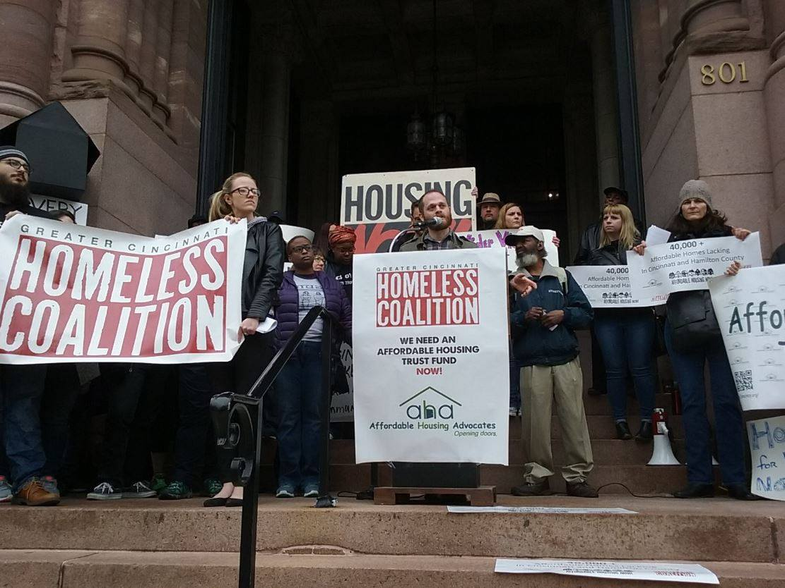

Design Challenge
First, we started with determining the design challenge. This was based on a worksheet from the Human Centered Design Toolkit created by IDEO. It helped frame the challenge as an actionable question.
First, we started with determining the design challenge. This was based on a worksheet from the Human Centered Design Toolkit created by IDEO. It helped frame the challenge as an actionable question.
After the research portion of the assignment, we focused on determining the website audience as well as the appropriate goals.